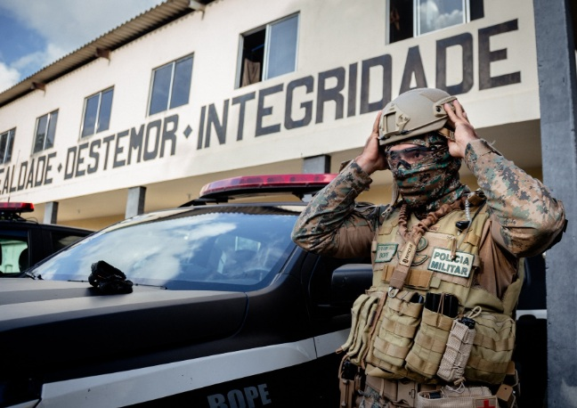
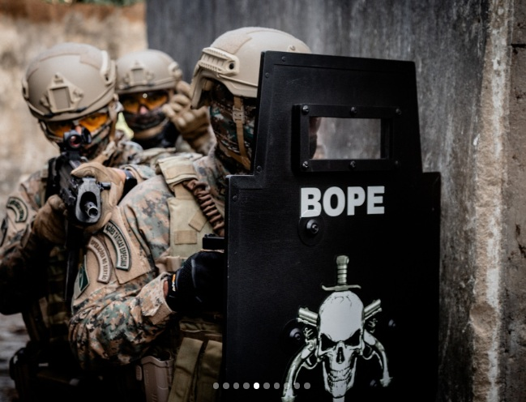
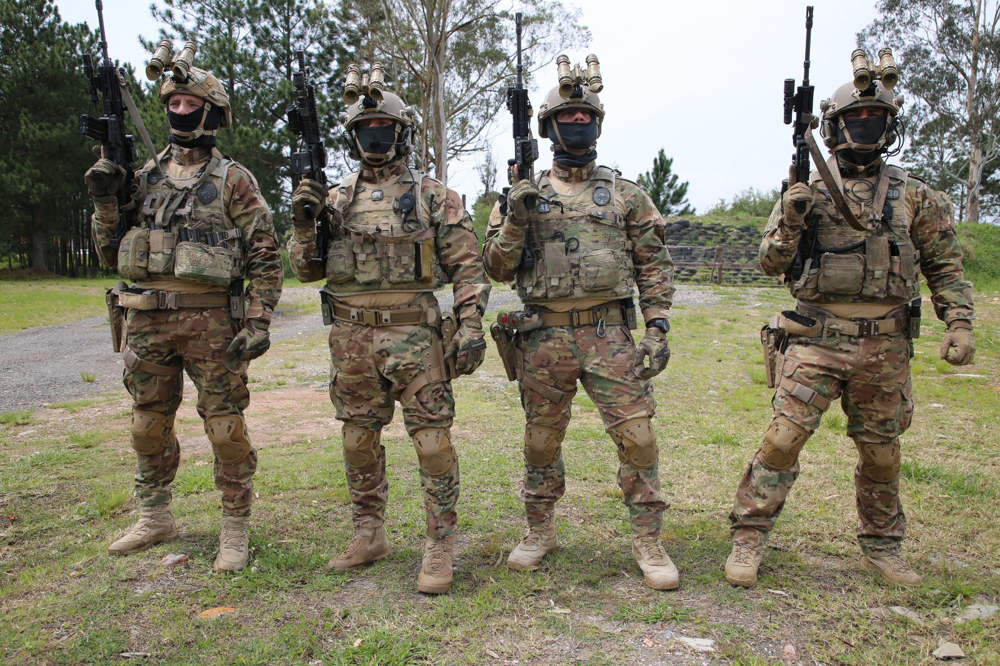
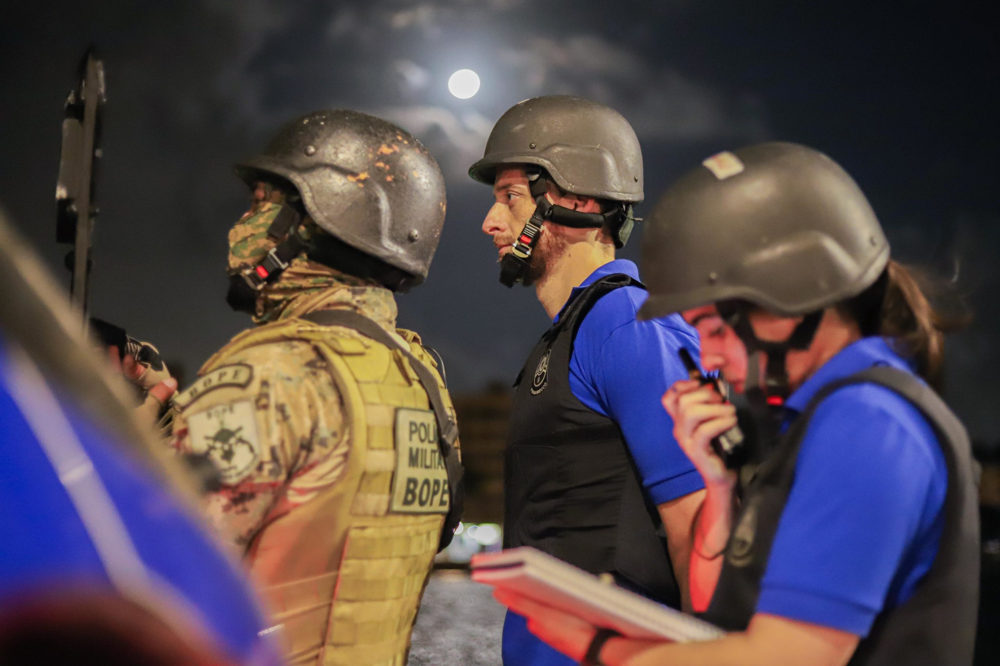
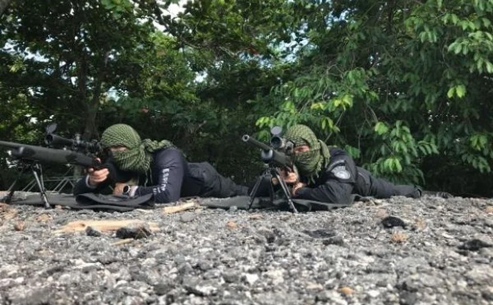
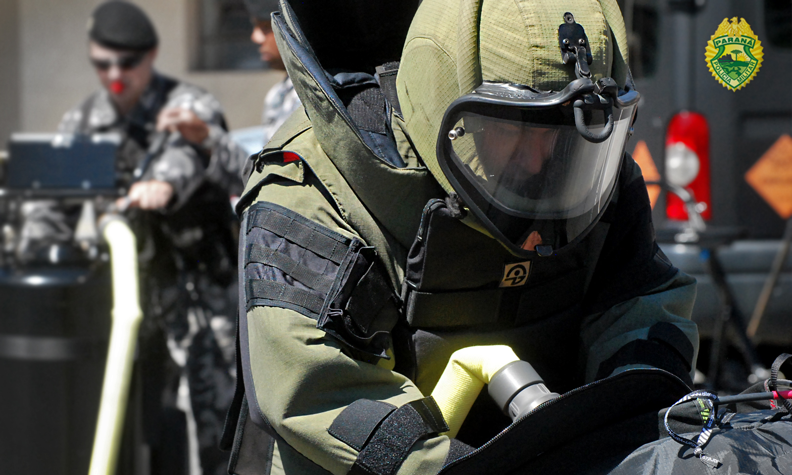

A Patrulha de Intervenção Tática (PIT) é uma unidade especializada em operações de alta complexidade, com foco em situações que exigem técnicas avançadas de intervenção e resolução de crises. Sua atuação é fundamental para garantir a segurança da população e a preservação da ordem pública em ambientes de risco.
A intervenção tática conta com várias alternativas do gerenciamento de crises, que são:
Unidade de Intervenção Tática (UIT)

A Unidade de Intervenção Tática (UIT) é responsável pela atuação direta em ocorrências de alto risco, realizando ações que exigem elevado preparo técnico e operacional. Seus integrantes são treinados para atuar em ambientes complexos, garantindo uma resposta rápida e eficiente durante situações críticas.
Negociador

O negociador atua na resolução pacífica de crises, estabelecendo comunicação com indivíduos envolvidos em ocorrências críticas. Seu objetivo é reduzir riscos, preservar vidas e buscar soluções por meio do diálogo, evitando o emprego desnecessário da força.
Atirador de Precisão

O atirador de precisão é um profissional especializado em observação e tiro de alta precisão. Além de fornecer informações estratégicas à equipe, sua atuação contribui para a proteção dos operadores e para o sucesso das operações em situações de elevado risco.
Explosivista

O explosivista é responsável pela identificação, análise e neutralização de artefatos explosivos. Seu treinamento especializado permite atuar com segurança em ocorrências envolvendo materiais explosivos, reduzindo riscos para a população e para as equipes operacionais.